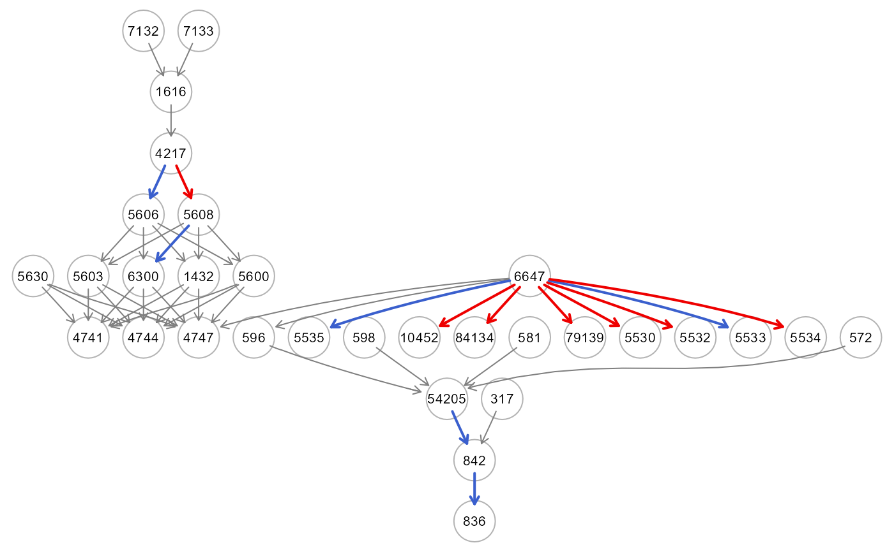

This function computes variable contributions for individual predictions using the Shapley values, a method from cooperative game theory where the variable values of an observation work together to achieve the prediction. In addition, to make variable contributions easily explainable, the function decomposes the entire model R-Squared (R2 or the coefficient of determination) into variable-level attributions of the variance (Redell, 2019).
getShapleyR2(object, newdata, thr = NULL, verbose = FALSE, ...)A model fitting object from SEMml() function.
A matrix containing new data with rows corresponding to subjects, and columns to variables.
A threshold value to apply to signed Shapley (R2) values. If thr=NULL (default), the threshold is set to thr=mean(Shapley(R2) values)).
A logical value. If FALSE (default), the processed graph will not be plotted to screen.
Currently ignored.
A list od three object: (i) data.frame including the connections together with their signed Shapley R-squred values; (ii) the dag with colored edges, if abs(sign_R2) > thr will be highlighted in red (sign_R2 > 0) or blue (sign_R2 < 0); and (ii) the list of individual Shapley values of predictors variables per each response variable.
Lundberg & Lee (2017) proposed a unified approach to both local explainability (the variable contribution of a single variable within a single sample) and global explainability (the variable contribution of the entire model) by applying the fair distribution of payoffs principles from game theory put forth by Shapley (1953). Now called SHAP (SHapley Additive exPlanations), this suggested framework explains predictions of ML models, where input variables take the place of players, and their contribution to a particular prediction is measured using Shapley values. Successively, Redell (2019) presented a metric that combines the additive property of Shapley values with the robustness of the R2 of Gelman (2018) to produce an R2 variance decomposition that accurately captures the contribution of each variable to the explanatory power of the model. Additionally, we use the signed R2, in order to denote the regulation of connections in line with a linear SEM, since the edges in the DAG indicate node regulation (activation, if positive; inhibition, if negative). This has been recovered for each edge using sign(beta), i.e., the sign of the coefficient estimates from a linear model (lm) fitting of the output node on the input nodes, as suggested by Joseph (2019). It should be noted that in order to ascertain the local significance of node regulation with respect to the DAG, the Shapley decomposition of the R-squared (R2) value can be employed for each outcome node (r=1,...,R) by averaging the R2 indices of their input nodes.
The Shapley values are computed using the shapr package that implements an extended version of the Kernel SHAP method for approximating Shapley values in which dependence between the features is taken into account. The operations necessary to compute kernel SHAP values are inherently time-consuming, with the computational time increasing in proportion to the number of predictor variables and the number of observations. Therefore, the function uses a progress bar to check the progress of the kernel SHAP evaluation per observation.
Shapley, L. (1953) A Value for n-Person Games. In: Kuhn, H. and Tucker, A., Eds., Contributions to the Theory of Games II, Princeton University Press, Princeton, 307-317.
Scott M. Lundberg, Su-In Lee. (2017). A unified approach to interpreting model predictions. In Proceedings of the 31st International Conference on Neural Information Processing Systems (NIPS'17). Curran Associates Inc., Red Hook, NY, USA, 4768–4777.
Redell, N. (2019). Shapley Decomposition of R-Squared in Machine Learning Models. arXiv: Methodology.
Gelman, A., Goodrich, B., Gabry, J., & Vehtari, A. (2019). R-squared for Bayesian Regression Models. The American Statistician, 73(3), 307–309.
Joseph, A. Parametric inference with universal function approximators (2019). Bank of England working papers 784, Bank of England, revised 22 Jul 2020.
# \donttest{
# load ALS data
ig<- alsData$graph
data<- alsData$exprs
data<- transformData(data)$data
#> Conducting the nonparanormal transformation via shrunkun ECDF...done.
#...with train-test (0.5-0.5) samples
set.seed(123)
train<- sample(1:nrow(data), 0.5*nrow(data))
rf0<- SEMml(ig, data, train=train, algo="rf", vimp=FALSE)
#> 1 : z10452
#> 2 : z1432
#> 3 : z1616
#> 4 : z4217
#> 5 : z4741
#> 6 : z4744
#> 7 : z4747
#> 8 : z54205
#> 9 : z5530
#> 10 : z5532
#> 11 : z5533
#> 12 : z5534
#> 13 : z5535
#> 14 : z5600
#> 15 : z5603
#> 16 : z5606
#> 17 : z5608
#> 18 : z596
#> 19 : z6300
#> 20 : z79139
#> 21 : z836
#> 22 : z84134
#> 23 : z842
#>
#> RF solver ended normally after 23 iterations
#>
#> logL: -33.2711 srmr: 0.0860057
#>
res<- getShapleyR2(rf0, data[-train, ], thr=NULL, verbose=TRUE)
#>
|
| | 0%
|
|=== | 4%
|
|====== | 9%
|
|========= | 13%
|
|============ | 17%
|
|=============== | 22%
|
|================== | 26%
|
|===================== | 30%
|
|======================== | 35%
|
|=========================== | 39%
|
|============================== | 43%
|
|================================= | 48%
|
|===================================== | 52%
|
|======================================== | 57%
|
|=========================================== | 61%
|
|============================================== | 65%
|
|================================================= | 70%
|
|==================================================== | 74%
|
|======================================================= | 78%
|
|========================================================== | 83%
|
|============================================================= | 87%
|
|================================================================ | 91%
|
|=================================================================== | 96%
|
|======================================================================| 100%

table(E(res$dag)$color)
#>
#> gray50 red2 royalblue3
#> 27 8 10
# average shapley R2 across response variables
R2<- abs(res4$est[,4])
#> Error in eval(expr, envir, enclos): object 'res4' not found
Y<- res4$est[,1]
#> Error in eval(expr, envir, enclos): object 'res4' not found
R2Y<- aggregate(R2~Y,data=data.frame(R2,Y),FUN="mean")
#> Error in data.frame(R2, Y): object 'R2' not found
PE<- predict(rf0, data[-train, ])$PE
cbind(R2Y=R2Y[,2],PEY=PE[-1])
#> Error in cbind(R2Y = R2Y[, 2], PEY = PE[-1]): object 'R2Y' not found
mean(R2) # total average R2
#> Error in mean(R2): object 'R2' not found
PE[1] # total MSE
#> amse
#> 1.110585
# }